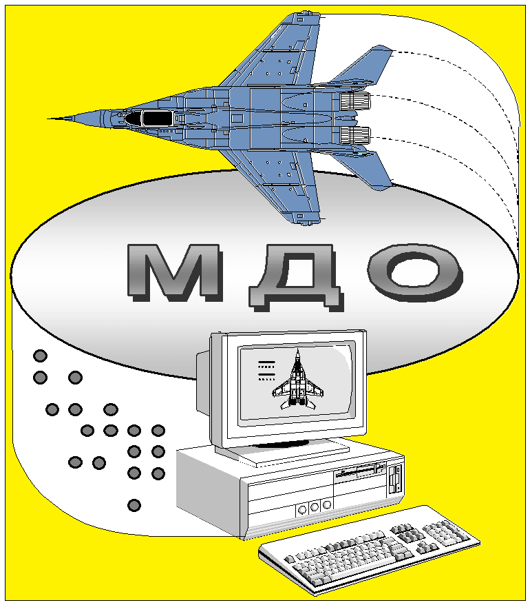

XX Міжнародний симпозіум
Методи дискретних особливостей в задачах математичної фізики

24-27 червня 2020 р. м. Одеса (Україна)
Харківський національний університет ім. В.Н.Каразіна
(Україна)
Національний технічний університет «ХПІ»
(Україна)
Інститут телекомунікацій і глобального інформаційного простору НАН України
(Україна)
Одеська національна академія зв’язку ім. О.С. Попова
(Україна)
Київський національний університет ім. Тараса Шевченка
(Україна)
Інститут кібернетики НАН України
(Україна)
Інститут гідромеханіки НАН України
(Україна)
Програмний комітет:
академік НАНУ В.Т.Грінченко (Київ),
академік НАНУ С.О.Довгій (Київ),
чл.кор. НАНУ Е.І. Нікіфорович (Київ),
чл.кор. НАНУ А.Н.Трофімчук (Київ),
чл.кор. НАНУ А.Н.Хіміч (Київ),
проф. А.Я. Бомба (Рівне),
проф. В.А.Ванін (Харків),
проф. П.П. Воробієнко (Одеса),
проф. А.А.Гуржій (Київ),
проф. Ibraim Didmanidze (Batumi),
проф. Г.Н.Жолткевич (Харків),
проф. В.Т.Лазурік (Харків),
рrоf. А.V.Меnshykov (Aberdeen),
проф. С.В.Єршов (USA),
проф. А.І.Носіч (Харків),
проф. С. Л. Просвірнін (Харків),
проф. Дж. Г. Санікідзе (Тбілісі),
проф. Ю.В.Шестопалов (Gavle),
проф. В.О.Щербина (Харків),
проф.А.Н.Хомченко (Миколаїв),
проф. Р.С.Хапко (Львів)
Оргкомітет:
доц. Г. С. Абрамов (Україна), проф. В. А. Ванін (Україна),
к.ф.-м.н. А. В. Гахов (Німеччина), проф. В.Д. Душкін (Україна),
проф. Г. М. Жолткевич (Україна), доц. В. І. Кузьмич (Україна),
проф. В. Т. Лазурік (Україна), д.ф.-м.н.О.В.Лисенко (Україна),
проф. В. А. Меньшиков(Україна), проф. С. І. Проценко (Україна),
доц. В. Н. Сейчук (Молдова), проф.О.О.Стрельнікова (Україна),
проф. В. О. Щербина (Україна), проф. В. В. Яцик (Україна).
Основні напрямки роботи:
- Крайові задачі математичної фізики та їх чиселові розв’язки МДО
- Інтегральні рівняння та їх застосування
- Метод дискретних вихорів в аерогідродинаміці
- Методи дискретних особливостей в електродинаміці і електроніці
- Спектральні задачі теорії коливань і хвиль, їх числові розв’язки МДО
- Математичне моделювання на базі МДО та числові методи в задачах фільтрації
- Комп'ютерне моделювання та обчислювальні експерименти за МДО, створення наукоємних програмних систем: методи і засоби проектування, паралелізм, бібліотеки, БД, GUI, тестування.